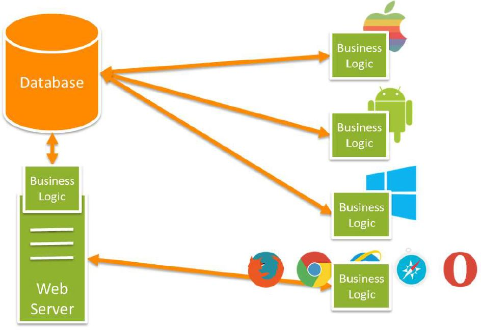
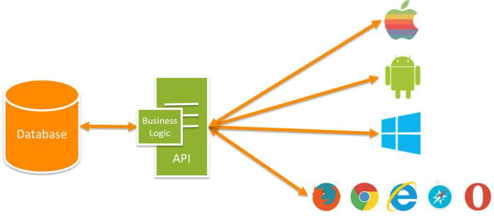
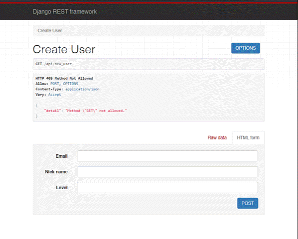

REST Framework in Django App
Intro
Infrastrucutre:
- Main project: rest_app.
- Application: api.
Terminology
- Endpoint - an url for a web-service where we can access server's resources.
- View - maps endpoint url with what you see in the front-end.
- Serializer - takes model written in Python and translates it into JSON:
{
'model_attribute_1': 'value',
'model_attribute_2': 'value',
'model_attribute_3': 'value'
}
- JSON is the format of front-end or application request to REST API
- JSON is the format of back-end response through REST API to front-end or application. - Model - data schema written as Python class where class attributes reflect data schema fields.
Architecture without REST:
- Each client/application needs to have it's own business logic.
- Each client/application needs to have it's own database connection.
- Front-end needs to have its own web-service where db resources are disposable due to business logic.
Architecture with REST:
- REST API enables to connect db by different apps as well as poses a web-service for front-end.
- REST API has its onw business logic which is shared among apps getting connected.
Features
App includes following features:
Demo
Workflow of api application:
- User hits the web address with a specified endpoint, e.g. www.web-page.com/api/users.
- Note that provided endpoint has two parts: api/ and users.
- Django goes to main rest_app urls.py searching for the api/ endpoint.
from django.urls import path, include
urlpatterns = [
path('api/', include('api.urls'))
] - Due to instructions in rest_app urls.py endpoint users is being redirected to api urls.py.
- The endpoint users follows instruction in api urls.py where is mapped with a function as_view() excuted on UserView:
from django.urls import path
from .views import UserView
urlpatterns = [
path('users', UserView.as_view())
] - UserView uses serializer to get data into JSON:
from rest_framework import generics
from .serializers import UserSerializer
from .models import User
class UserView(generics.CreateAPIView):
queryset = User.objects.all()
serializer_class = UserSerializer - In serializers.py we define UserSerializer:
from rest_framework import serializers
from .models import User
class UserSerializer(serializers.ModelSerializer):
class Meta:
model = User
fields = ('id', 'email', 'nick', 'level', 'created_date')
- in class Meta we indicate which model we want to serialize,
- fields determines the JSON structure of User model,
- 'id' field is created automatically for every model once created in db so we want to include this in JSON. - UserSerializer takes User as model:
from django.db import models
class User(models.Model):
email = models.CharField(max_length=30, default='', unique=True)
nick = models.CharField(max_length=20, default='', unique=True)
level = models.IntegerField(null=False, default=1)
created_date = models.DateTimeField(auto_now_add=True)
- notice, I don't declare 'id' field in the model,
- as I said above, 'id' field is being generated automatically during model db creation.
Posting data to db:
Setup
- Installing django library in venv:
pip install django
pip install djangorestframework - Installing most updated markdown:
pip install git+https://github.com/Python-Markdown/markdown.git - Starting project in project directory:
django-admin startproject rest_app - Changing directory to rest_app:
cd .\restapp - Creating app:
python manage.py startapp api - Creating new files in api application:
.\api\urls.py
.\api\serializers.py - Entering apps to rest_app.settings:
INSTALLED_APS = [
....,
'api.apps.ApiConfig',
'rest_framework'
] - Data migration each time when we want to update changes to db (first migration will create a database with default tables):
python manage.py makemigrations
it detects the changes and prepares them to be uploaded to the database
the changes are being saved to migrations directory - Applying changes to db:
python manage.py migrate - Creating superuser:
python manage.py createsuperuser